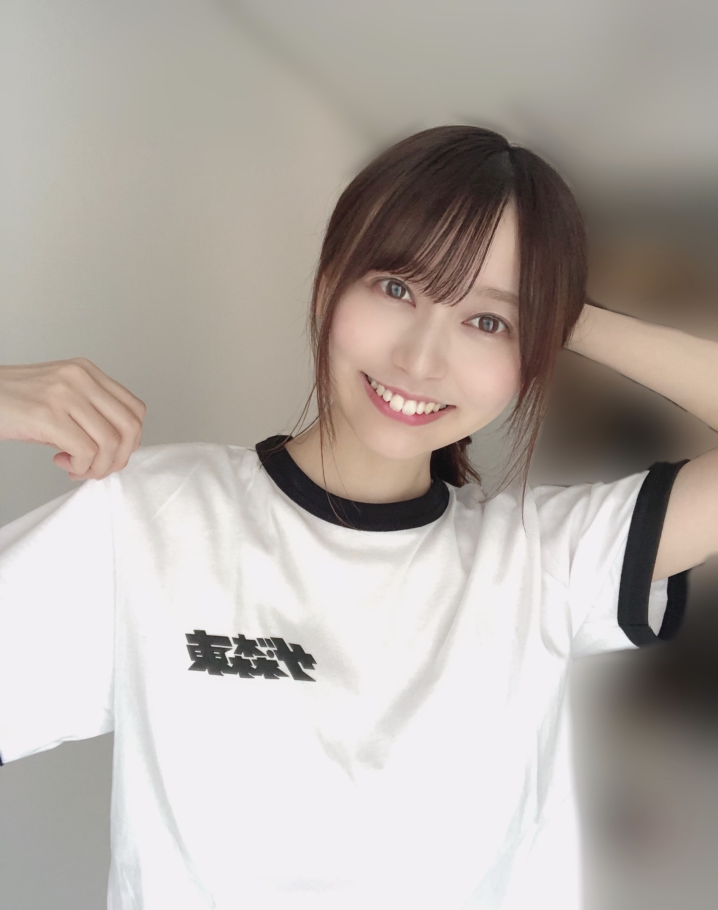
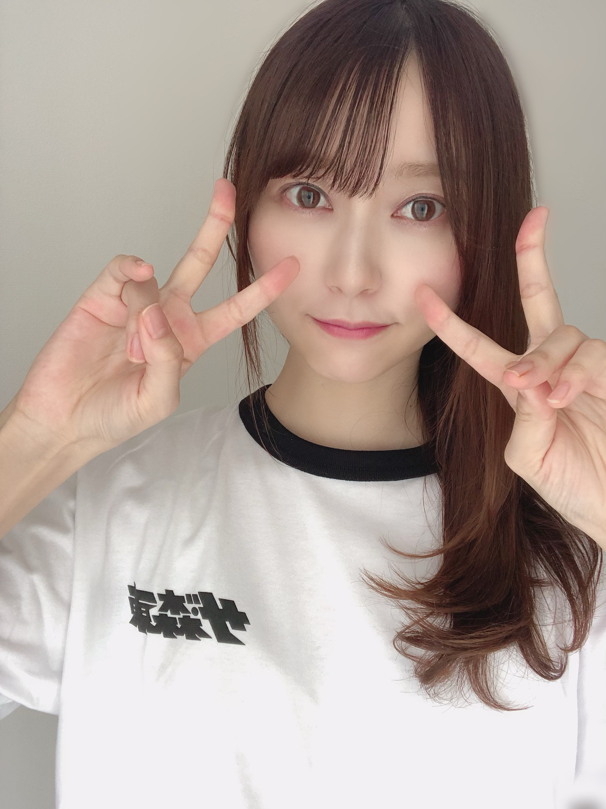
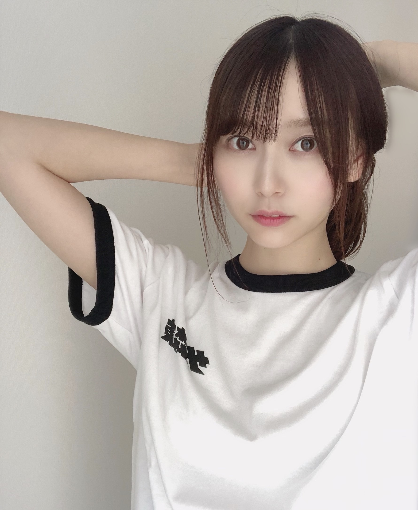

2020/0829Satそんなこんなで☺︎弓木奈於
こんにちは！
ページをクリックしてくださり、ありがとうございます☺️
乃木坂46 新4期生
京都府出身
弓木奈於（ゆみきなお）です\( ¨̮ )/

さらば青春の光さんに、さらば青春の光さんのオフィシャルグッズ
株式会社ザ・森東さんのロゴが入ったTシャツをいただきました✨
本当に本当に有り難くて、嬉しくて
早速着させていただきました(∩ˊᵕˋ∩)･*
男性でも女性でも、どこへでも着て行けるような素敵なデザインで、
「ジーンズに合わせたら可愛いかな？」「赤いスカートに合わせても可愛いかも！」
などなど組み合わせを考えるのがとても楽しいです✨
心から大切にさせていただきます( *ˊᵕˋ ) ⁾⁾
✎...ロゴ見せ奮闘記。✎...
携帯を立てかけて、シャキッと直立すると
『あ、髪の毛がロゴにかぶさって見えてない！』
↓ ひらめき( '-' )✧ ↓
『かぶさった髪の毛をよけよう！』

『...なんだかピンと来ない。』
↓ ひらめき( '-' )✧ ↓
『髪の毛全部あげてみよう』

『あ、また手をヘアゴムの代わりにしてしまった』
〜ヘアゴム取りに行き中〜
↓ ひらめき( '-' )✧↓
『あ！以前のブログでおだんごヘアに挑戦した時
あまり上手にお見せできなかったから
再チャレンジしよう！』
おだんご
『おだんご、ちょっぴりお見せ出来たかも！！』
ー 完 ー
という時の流れでした。笑
先日8月23日は、森田さんのお誕生日でした✨
ずっとテレビで拝見していたお二人と『ノギザカスキッツ』でコントに挑戦させていただける事が本当に幸せで有り難く思います。
私の拙い話をいつも大声で笑ってくださったり、話を広げてくださったり、いつ何時も場を盛り上げてくださったり、コントにアドバイスをくださったり、心から優しい森田さんに
収録ではたくさん学ばせていただいています。
私も見てくださっている皆さんに笑顔になっていただけるように、全力で頑張ります！！
改めて、お誕生日おめでとうございます✨
---------- ｷﾘｶｴ ---------
コメントで、お家で映画やドラマを見ている時に何か食べる？の答えを書いてくださってありがとうございました☺️
早速、コメントをいただいた〝紅茶を飲みながら〟見てみました☺︎
⚫︎何のドラマを見ていますか？
という質問をたくさんいただきありがとうございました！
私は現在放送中のドラマほぼ全て見ています☺︎
昔からドラマを見る事が好きで
「今日〇曜日やから、ドラマ〇〇や！楽しみやなぁ˙˚⸜(* ॑ ॑* )⸝˚˙」
と思いながら過ごしていました！
家族皆ドラマを見る事が好きで、でも個人個人で好きなドラマのジャンルが違ったので
ほぼ全部見る事が多かったんです！
ドラマは知らなかった世界や、視野が広がるきっかけになる事が多くて素敵だなと思います✨
ほっこり、ハッピーな気持ちになるオススメな映画やドラマがあったら是非教えてください✨
最近は映像だけじゃなくて、語彙力を鍛えるためにも（...笑）本を読もうと思って色々探し中です！
あと、動物の動画を見て癒されています( ⸝⸝⸝˙~˙⸝⸝⸝ )
そんな最近のお話でした(∩ˊᵕˋ∩)･*
---------- ｷﾘｶｴ ---------
明日は黒見ちゃんです\(ᯅ̈ )/♡
何度も言いすぎです！って言われちゃうかもしれないのですが
黒見ちゃんが本当に好きです。笑
美佑ちゃんのブログに書いてあったように、
私生命線短いんですよね（笑）
黒見ちゃんも美佑ちゃんも同じぐらい長くて、私は「え！私もうここで線終わってる！！」
ってなりましたね☺︎笑
でも手相って変わるって聞いた事があるので、伸びたら良いな☺︎
伸びるような生活をすれば良いんですよね！
写真を、前半にたたみかけてしまうブログになってしまいましたが
最後まで読んでくださりありがとうございました( *ˊᵕˋ ) ⁾⁾
暑い日が続いていますが、皆さんお身体に気をつけて
素敵な一週間をお過ごしくださいね✨
本日もありがとうございました☺️
2020/08/29 16:36

PROFILE
新4期生リレー
202104
| SUN | MON | TUE | WED | THU | FRI | SAT |
|---|---|---|---|---|---|---|
| 1 | 2 | 3 | ||||
| 4 | 5 | 6 | 7 | 8 | 9 | 10 |
| 11 | 12 | 13 | 14 | 15 | 16 | 17 |
| 18 | 19 | 20 | 21 | 22 | 23 | 24 |
| 25 | 26 | 27 | 28 | 29 | 30 | |

コメント(201)
25回目のブログ更新ありがとう！
最近、クーラー無しでは生きられないことが分かってちょっとショックや…。
今までは扇風機があれば生き抜けたはずなのに、クーラーを一回使うと、その味を占めたのか抜け出せなくなっちゃった笑笑
それって、他のことにも通ずるものがあるよね。
例えば、食べ物とかでも少しお高いモノで良い品質のモノを買って食べてから、その味を忘れることが出来なくなり、また手を出しちゃうって言うね。
人間って進化していくと初心を忘れちゃうんやなぁって改めて感じたわ笑
なんかちょい雑学風になってごめんね( ˙-˙ )
あ、そいえば白石さんの卒業記念メモリアルマガジンが10月に発売しますが、もう既に予約しました！早く見たい自分と、もう少しで卒業か。っていう2つの想いが葛藤しています。
でも、卒業コンサートはしっかり見届けたいと思います。ずっと応援して来たので！
来週から9月になりますね。
また次のブログ待ってます。
ゆみっきーLOVE♡♡
りゅうや
弓木ちゃん今日も可愛いです。
暑い中お仕事お疲れ様です。
今日はお仕事お休みでした。
明日から、四連勤です。頑張ります。
弓木ちゃんの生写真あまり持ってないので集めます。
浴衣の弓木ちゃんの生写真欲しいです。
これからもお仕事頑張って下さい。
これからのブログを楽しみにしてます。
あ、さらばさんのTシャツやったんね笑
一瞬見た時体操服のコスプレかと思った笑
なんか奈於ちゃんめっちゃ髪伸びた？
いつも縛ってるからかな？二枚目の写真がめっちゃ長く見える
お団子ヘア大好き！
最近のドラマやと日曜にやってる親バカ青春日記ってやつは面白いし好きやなぁ
またブログ更新楽しみにしてます！
(=ﾟωﾟ)ﾉﾎﾅ､ﾏﾀ!!
最近少しづつ夜は涼しい日々が戻ってきましたね！
奈於ちゃんはそれにしても可愛いはもちろん
色気も兼ね備えてて本当に大人っぽく見える！
熱中症とかまだまだ気を抜かず気をつけてお仕事FIGHT！
Qぐらんぶる見に行きました！
奈於ちゃんの好きな映画はなんですか？
種類でも作品でも！自分はワイルドスピードかな〜！
四コマみたい(?)で可愛いなぁ、、
君の膵臓をたべたいめちゃくちゃ好き！！オススメ！！
後、本は乃木坂文庫の時にコラボしてた幸福な食卓っていう本がオススメだよ〜(ᵔᴥᵔﾉ)ﾉ︎︎
弓木ちゃんも素敵な1週間を過ごしてねฅ^. ̫ .^ฅ～！
また更新楽しみにしてるよ！！
✂︎- - - - - - - -キリトリ- - - - - - - - - - -
質問です！！！
なおちゃんはしゃぶしゃぶを食べるときごま派ですか？ポン酢はですか？？？
--------ｷﾘﾄﾘ線--------
私は来週からテストです
なおちゃんもお仕事頑張ってください！！！
おすすめのドラマはアンサング・シンデレラ
えー？めちゃTシャツ似合うじゃん？ポニーテール姿でも、なんかスポーティー感出てるなあ(*´ω｀*)♡（ゆみっきー運動できるっけ？）
結構写真奮闘したよね（笑）
でも髪の毛片方にする姿初めて見た、めちゃ可愛いじゃん(*´ω｀*)♡♡
次の手で髪の毛を抑える写真、ちょっと肌が白めに見えて凄く綺麗だな(ﾟдﾟ)！♡♡
ポニーテールもいいし、単純にこの仕草も好き(｡>﹏<｡)♡♡♡（分かる人いるかな？（笑））
お団子がちょっと見にくいけど、最後の髪の毛を見ると結構綺麗に結べたよね＼(^o^)／♡
森田さんの誕生日以降本人に会えたの？
紅茶を飲む姿見せてよ～(｡>﹏<｡)♡
生命はそもそも長さじゃなくて、カーブさでしょう？
以前の乃木坂工事中で勉強になったよ＼(^o^)／（笑）
写真は全然良いよ、凄く可愛くて嬉しかったよ＼(^o^)／
これからも頑張って(/･ω･)/
ゆみっきーも体調気をつけて
さらば青春の光さんのTシャツもロゴが特徴的で奈於ちゃんが着ると
めちゃめちゃ似合っててかわいいねฅ∪･ω･∪ฅ♡♡♡♡♡これはスカートとかなら凄い似合うんじゃない！？でもジーンズでも凄く似合うかも（笑）
そして前回のブログでも今回のブログでもお団子ヘア載せてくれてありがとう♡奈於ちゃんのお団子ヘアがとっても好きなのでまた最チャレンジしてくれてありがとう♡めっちゃ可愛いです！！！！♡
まだまだ暑い日が続きますが、弓木ちゃんもお身体には気を付けて素敵な1週間を過ごしてください(*˙˘˙*)❥❥
最後に質問ですが、
弓木奈於ちゃんの好きなお笑い芸人は誰ですか？今度Youtubeで見たいな〜って思ってるので良ければ教えて貰えると嬉しいです♡
♡あみ♡
奈於ちゃん見せ方上手だなあ
素敵なデザインと相まってTシャツ
のモデルさんみたい
読んでくれてありがとうございました
反乱軍のスパイとしてファーストオーダーに
追われながら、リトルマイキーと
埼玉から応援している
まさとです
「#乃木坂ツーリスト」の動画のメッセージ
なかなか良かったですよ
やっぱり動画のインパクトありますよね
これからも積極的にチャレンジしてください
水曜日から金曜日にかけて
ディズニーランドに遊びに行ってきました
詳しい事は次のブログにコメントしますね
ではまたねバイバイ
お薦め映画ですが個人的に、ラストコンサート、いちご白書かな？
カワイイ！
なおちゃんの文章を読むのは好きです
書いてることはなんかおもしろい！
おだんごヘア見えたのでうれしいです
ではまだ~
オフィシャルグッズいいですね〜
ロゴ見せるために色んなポーズで写真撮ってくれて本当に嬉しいです
全部保存してきました！
紅茶…自分今までの人生で1回しか飲んだことなくて、その1回が凄い渋い味がしてそれ以来苦手な印象なんですよね
奈於ちゃんが飲むならちょっと挑戦してみようかなと思います
ほっこりになるか分からないけど、自分は洋画の「きみに読む物語」という映画が好きなんです
感動系なんですけど、見終わった後は切ない感じもありながら心温まるほっこりした気分になるので結構知名度がある作品なのでもしかしたら見たことあるかもしれませんが、見たことがなければオススメです！
動物の動画だとYouTubeでよくもちまる日記やジョイ家やよりめのはちくんなんか見たりしてます〜
生命線や手相って変わることもありますし、なんなら書き足したらいいみたいな話を手相で有名な島田秀平さんが仰ってたような…
残暑が激しい中、台風も近づいてる話もあるので奈於ちゃんも気を付けてね
またブログ更新お待ちしてます
お団子奈於ちゃん、とってもかわいいですよ！
#羽ばたけ坂道研修生
ザ・森東のＴシャツ、小学校の体操着み
たいでかわいいね。
コーディネートのセンスが問われるアイ
テム。
でもよっぽどお気に入りの様子。ヘアセ
ット変えて何枚撮っとんのじゃい。
乃木どこか乃木中でやってたけど、生命
線って長さが問題じゃないらしいです。
いくちゃんの生命線が手の甲までいって
るって自慢してたら、違うって言われて
ました。いかに大きくカーブを描いて、
手の中心に張り出しているかどうかの問
題らしい。
あら！今日も尊いな！お団子よう似合っとるよ！
ドラマか〜オススメはやっぱり空飛ぶ広報室かな！じれったいさ凄いけど最後物凄いキュンキュンするから見て欲しい！見たことあるならもう一回！
奈於ちゃんはアニメ見るんかな？気になるの！
今日はこのへんで！またブログ更新楽しみにしてるばい！
栃木より愛を込めて。
今日も可愛い！
高校が始まって毎朝早く起きるのが
つらいですw
アンサングシンデレラ見てますか？
僕は今やってるドラマで1番好きなドラマです！
次のブログ更新も楽しみにしてまーす！
なお！
やっほー！
ひろき(Yandji)です☺️
ブログ更新ありがとー！！！
質問タイムー！！！
やってみたいスポーツってある？
また、コメントするね！
では、またねー！
ひろき(Yandji)より
毎週楽しみにしてるよ
Tシャツ似合ってるよ！！
ただただTシャツ撮るためにこんなに色んな髪型見れるとは思ってもいなかったから嬉しい〜
お団子見えました！！
夏に良くする髪型はなんですか？
どの髪型も似合っててかわいいなぁ。森東のTシャツも着こなしてて最初なんだか分からなかったよ笑
個人的には御団子が大好物なのですごく可愛いです…
早く逢いたいなぁ
たーくん
さらばさんのTシャツもらったのね！涼しそうでシンプルなデザインやね！
ドラマはひとつしか見てないんやけど、アンサングシンデレラ！毎週欠かさずね！
紅茶と言えばこれ！
お仕事頑張ってください！！
応援してます
可愛すぎます
さらばTシャツ私も買ってしまおうか…弓木ちゃんとオソロにしたいがために( ᵕᴗᵕ )✩⡱
それになかなか可愛くてビビった！笑
髪を片方に寄せ奈於が1番好きや！！
ポニテも捨て難い、笑
弓木ちゃんはどんな髪型でも似合うね！今度は是非ともツインテールをー！
ドラマは面白いよね！
今期はナギサさんを見てるよ！若月も出てるしほっこりするしで良いドラマで好きです( ˶˙ᵕ˙˶ )
その他は特に見てないけど…来週最終回みたいでいつも何かしらドラマ見てると最終回が来るのが早すぎてびっくりする笑
時の流れは早いね〜
アニメとかは見ますか？？
私はあんまり見ないけどアイドル系のアニメはどれも見てしまった〜、何か好きなのあったら教えて！見るので！
それではブログ更新ありがとう！
ななこより
初コメです！！受験勉強辛いけど、いつもなおちゃんのブログ見て、やる気出してます！！更新楽しみにしてます！！
知念実希人さんの『天久鷹央シリーズ』がめちゃくちゃ面白いのでオススメです！医療推理小説なんだけど、知識なくても読めるのでよんでみてください！！
暑い日が、まだまだ続くけど、夏バテに気を付けて頑張ってね!応援してます!(｡♡‿♡｡)( ˘ ³˘)♥
弓木ちゃん
ブログ更新ありがとうございます。
久しぶりです！元気見たいで、
安心しました。
森東さんシャツ？
一瞬、弓木ちゃんの高校生の時の体操着と思ったです。
でも、弓木ちゃん着用すると、
中々似合うね！
可愛い弓木ちゃんだよ！
弓木ちゃん！京都は、毎日猛暑です。
個人的話しですけど、毎日外の仕事で、焼かれました！
頭坊主だから、たこ焼きと言われたです！酷いでしょ！
自分でも、鏡見たら、たこ焼きのソースに青のりを、かけた見たいに見える！最悪です。
弓木ちゃんは、日焼けしてますか？日焼けは、女性の的と言ってますから、気お付けて、ますよね？(笑)
京都も、もうすぐ夏終わります。何時しか？蝉の声可なり
少なくなりました。
何故か？秋の虫が、夜鳴いてます？何故？スィーチョンと鳴き声聞こえてます。
弓木ちゃん！中々会えないけど、今日も、京都から、応援してますよ！頑張って下さいね！
弓木ちゃんは、SHOWROOMの
配信近々あるかな？
あれば、ぜひとも、見たい！
絶対に、見ます！宜しくお願いしますね！
弓木ちゃん！
久しぶりに、質問です。
宜しくお願いしますね！
1 弓木ちゃん
一番、贅沢に、沢山食べれたら、幸せと思う食べ物は、何ですか？
質問の、回答宜しくお願いしますね！
弓木ちゃん！
これからも、メンバーと、仲良く、乃木坂46の、未来の為に力になって、下さいね！
素敵な、弓木ちゃん大好きだよ！❤️
ありがとうございました。
京都と比べて東京の夏はどうですか
目がとても印象的なのですが
カラコンですか？
奮闘記面白かった！
髪の毛よけてる写真ちょっと大人っぽく見えて可愛い
もちろん全部可愛いよー笑
お団子また見せてくれて嬉しい！
自分もいつも笑わせてもらってるし買おうかなー
ドラマは今は親バカ青春白書見てる！
福田監督の作品好き〜
絢音さんが選書サービスってものを紹介してたのでそれを使って本探し中です
体調気をつけてねー
おやすみなさい
私は昨日やっとテストが終わってBLT買いに行けました...！お団子が眼福でしかないです可愛い〜！
私あんまりドラマとか最初の1･2話だけ見ても見続けれない人だから私がドラマとか教えて欲しいくらい...いつか機会があれば教えてください笑
本はさくらももこさんの本が私は好きでよく読んでます(⌒‐⌒)
質問なんですけど奈於ちゃんは何のおせんべいが好きですか？？私はぽたぽた焼きがすきです笑
またブログ更新楽しみにしてます⚐︎
ブログ更新ありがとう
結局何着てもかわいいんだなってことがよく分かるブログでした笑
さらばの二人もバナナマンもオリラジも乃木坂の周りには本当にいい方々に恵まれてるね
奈於ちゃんもドンと胸を借りてドンドン自分を出して行けるといいね！
またねー
ほんと、とんでもない美人さんですな！いつか、ドラマに出る側になってほしい！
最初見た時に体操服！？って思っちゃいました笑
森東Tシャツだったんですね
似合ってますよ✨
今回の写真はいつにも増してめちゃめちゃに可愛かったんでしっっっっっかりと保存しました！(今までも全部してるんですけどね笑)
どんな髪型してても可愛いって天才！お顔が天才！
また久しぶりに三つ編みとかおさげが見たいな〜
奈於ちゃんも身体に気をつけて！
またね！
●質問●
学校の制服とかジャージってまだ家にある？
僕は卒業したら全部捨ててしまって今になって捨てなかったらなと後悔してます。。。
もしかしたらリレーブログで１番ブログが早くくるのが
新４期生ブログだよね！！
個人ブログになっても定期的にブログ更新してくれたら嬉しいです。。
なおちゃん可愛い！握手会行きたいな
コメントする